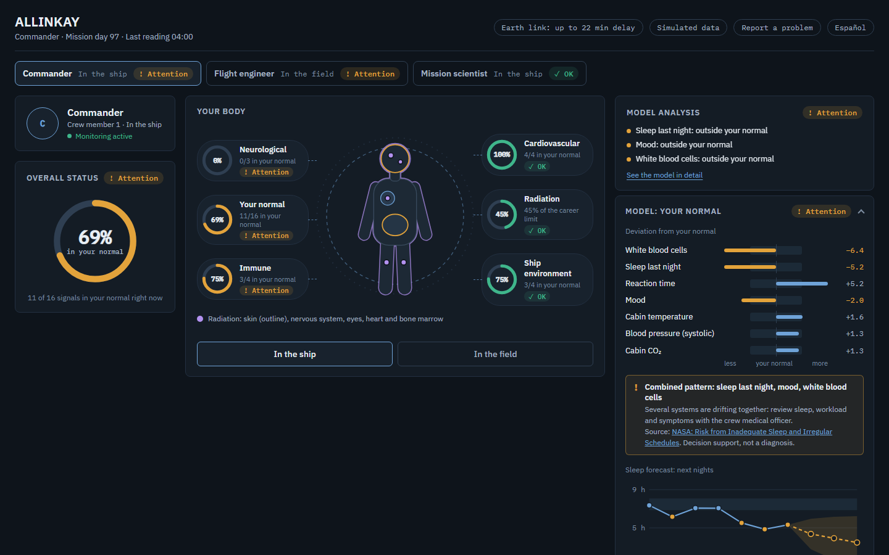
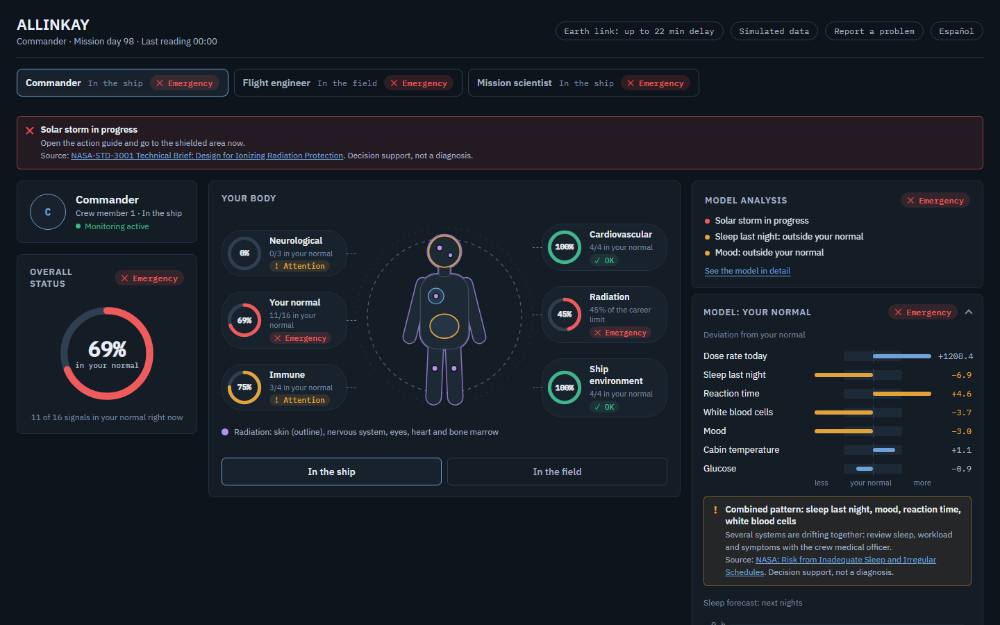

22 min
Help from Earth arrives late
On a crewed Mars mission the one-way delay is 0 to 22 minutes, and blackouts can last days or months. Today, health data from tools such as the CSA Bio-Monitor and Bio-Analyzer is interpreted by teams on Earth.
Create Health Monitoring Software for Astronauts on Space Missions
ALLINKAY is a health panel that a crew uses on board, without waiting for Earth. It shows each astronaut, in time, when their body moves away from their own normal, and what to do about it.
The live app runs a simulated Mars mission: one second is one hour.

22 min
On a crewed Mars mission the one-way delay is 0 to 22 minutes, and blackouts can last days or months. Today, health data from tools such as the CSA Bio-Monitor and Bio-Analyzer is interpreted by teams on Earth.
14–27%
One day after landing, three of the four Inspiration4 crew members had 14% to 27% fewer white blood cells than before flight. None of them left the general range of 3.8 to 10.8.
660 mSv
The round trip to Mars alone adds about 660 mSv (1.8 mSv per day in transit), more than NASA's career limit of 600 mSv.

No monitor can have zero false alarms and zero missed changes: lowering one raises the other. So ALLINKAY confirms before it alerts, and we measured both errors with a script that runs the same loop as the app.
| Measure | Result | Target |
|---|---|---|
| False alarms, in the ship | 1 every 10 astronaut-years | at most 1 every 10 years |
| False alarms, in the field | none in 55 astronaut-years | at most 1 every 10 years |
| Changes detected within 10 days | 1195 of 1200 | at least 99% |
The numbers come from synthetic data. The model must be validated on real data before it is used with people.
A modular monolith with a hexagonal design: the model is plain Python with no input or output, so it can run on any onboard computer.
FastAPI streams each crew member over a WebSocket to a React panel, in English and Spanish, on desktop and phone.
128 backend tests, 24 frontend tests, a secret scan and the model validation run in GitHub Actions on each pull request.
Every other reading in the demo is synthetic. No real person's data is used, apart from the open, anonymised OSD-569 dataset.